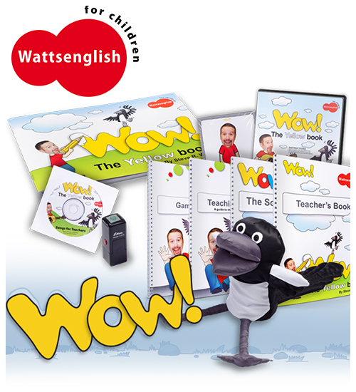
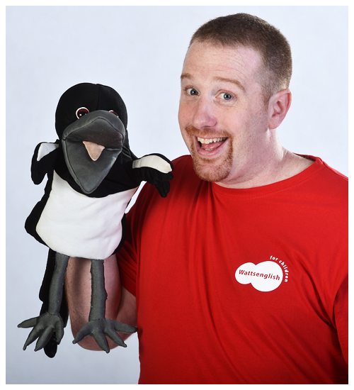
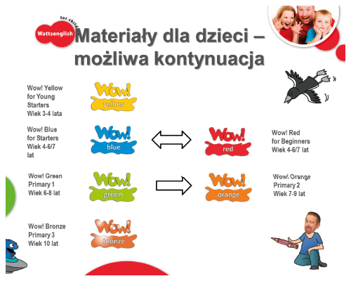
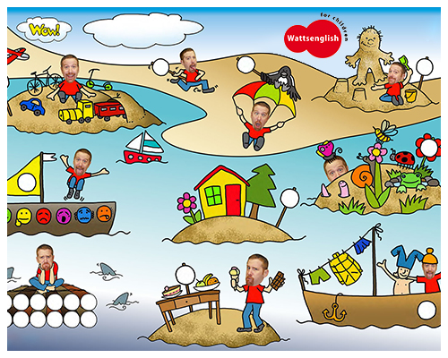

Angielski dla dzieci WOW English!
Zapraszamy dzieci na zajęcia z unikalną metodą Wow English! Dzieci uwielbiają Steve'a i Maggie, bawią się i uczą się angielskiego.
ANGIELSKI DLA DZIECI W WIEKU 3-12 LAT METODĄ WATTSENGLISH!
- bogaty pakiet multimedialny: książka, DVD, CD i wiele innych materiałów przeznaczonych do nauki języka angielskiego w przedszkolach i szkołach podstawowych.
- unikalne filmy na wideo, które umożliwiają kontakt każdemu dziecku z rodowitym Brytyjczykiem.
- pierwszy zestaw materiałów, który wykorzystuje twarz i jej mimikę do nauczania języka angielskiego.
- wyjątkowa metoda Wattsenglish, która uczy języka poprzez zabawy edukacyjne.
- materiały pozwalają na nieustający kontakt z rodowitym Brytyjczykiem poprzez interaktywne filmy video z opowiadaniami i piosenkami.
- nie wymaga stosowania metody translacyjnej do wprowadzania elementów językowych – naturalnie motywuje do reakcji i uczy mówienia niemal od pierwszej minuty zajęć.
- absolutnie motywujący dla dzieci – nie zmuszamy dzieci do nauki – one się nią bawią.
- pozwala rodzicom sprawdzić, co dziecko już potrafi i pomaga mu w ćwiczeniach w domu bez dodatkowego stresu czy wysiłku.
JAK WYGLĄDA NAUKA Z WATTSENGLISH?
 
- nasza metoda jest skuteczna a jednocześnie przyjazna - dzieci ją uwielbiają!
- dzieci są nieustannie angażowane w różne zadania – słuchają, reagują i mówią!
- starannie przygotowane plany lekcji wykorzystują unikalne narzędzia:
o CD i DVD z native-speakerem
o pacynkę Maggie
o karty do prezentacji słownictwa
o gry i zabawy językowe
o interaktywny podręcznik dla dzieci
o księgę piosenek
- na lekcji i w domu dzieci oglądają historyjki na firmowym DVD, żeby mieć nieustanny kontakt z rodowitym Brytyjczykiem i utrwalać materiał z lekcji.
JAK WYGLĄDA NAUKA Z WATTSENGLISH?
- pierwszy program z twarzą człowieka → rozpoznawianie i identyfikacja twarzy jest bezpośrednio związana z zapamiętywaniem języka przez dzieci - użycie pamięci emocjonalnej potęguje efekty nauki
- bezpośredni kontakt z Brytyjczykiem poprzez piosenki i filmy na DVD
- dwujęzyczność: dzieci identyfikują język ze Stevem i Maggie: będą odpowiadać danej osobie w języku, w którym się z nim/nią komunikują – to umożliwia powtarzanie materiału z interaktywnym DVD w domu
- zrozumiały i wysoko motywujący system do nauki języka angielskiego
- zadania są przygotowane w konkretnych przedziałach wiekowych
- efektywna nauka poprzez 100% aktywnego uczestnictwa w lekcji
- kontynuacja programu i metody od przedszkola do szkoły podstawowej
 
OFERTA DLA RODZICÓW
dwujęzyczność - program wykorzystuje zasady wychowywania się w rodzinie dwujęzycznej, tam gdzie np. ojciec jest Polakiem a matka Angielką. Dzieci utożsamiają język z osobą i naturalne jest dla nich aby odpowiadać danej osobie (nauczyciel, Steve) w języku, którego oni używają - – to umożliwia powtarzanie, utrwalanie i poszerzanie materiału z interaktywnym DVD w domu
- dzieci mają kontakt z Brytyjczykiem- od niego uczą się prawidłowego akcentu. Frazy są wielokrotnie powtarzane- dziecko słyszy nawet minimalne niuanse i chce naśladować ulubionego bohatera
- dzieci są zaangażowane w rozwiązywanie zadań i są motywowane aby odpowiadały i powtarzały za Stevem/nauczycielem
- Maggie- pojawia się we wszystkich materiałach i na każdej lekcji, jest łącznikiem miedzy lekcjami a DVD oglądanym w domu
- efektywna nauka poprzez 100% aktywnego uczestnictwa w lekcji
- możliwa kontynuacja programu i metody od przedszkola do szkoły podstawowej